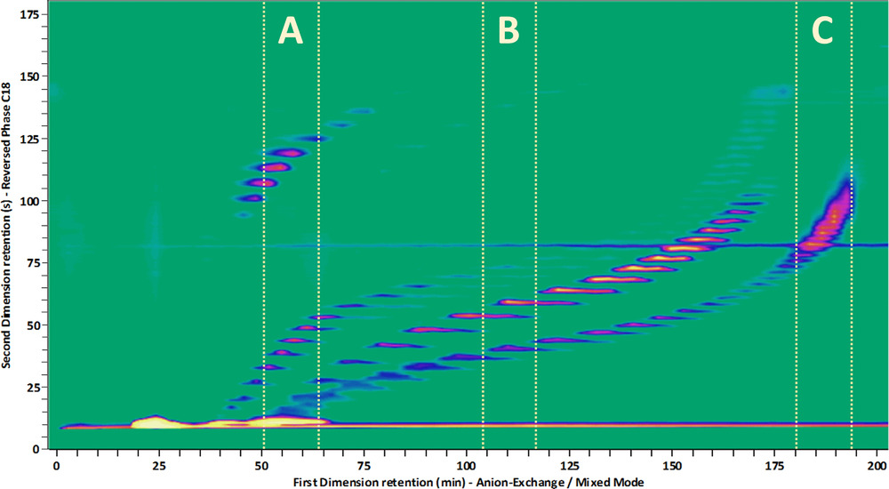

Highlights
Gravitational waves
 The breakthrough discovery of the first gravitational wave
signal in September 2015 (Nobel Prize 2017) has opened a new
window to the Universe. Analyses of the signal waveforms during
the initial inspiral, merger and final ringdown phase provide
crucial information about the properties of superheavy stellar
objects.
The breakthrough discovery of the first gravitational wave
signal in September 2015 (Nobel Prize 2017) has opened a new
window to the Universe. Analyses of the signal waveforms during
the initial inspiral, merger and final ringdown phase provide
crucial information about the properties of superheavy stellar
objects.
- By Benjamin Miller

Liquid Chromatography
 Two-dimensional liquid chromatography (2DLC) is a powerful
technique to separate and detect trace molecular compounds in
complex samples (think of proteins, antibodies, oils, paints,
etc.). The separation is based on the difference in
"retention" time that it takes for each compound to be carried
by a solvent (mobile phase) through a column filled with a
material (stationary phase) that interacts with the injected
compounds based on a chosen property, such as molecular size,
charge or hydrophilicity, as schematically drawn on the
right. 2DLC is combined with a detection method such as
UV-VIS, IR, or mass spectroscopy (MS), that identifies the
separated molecules. As the compounds can have extremely low
concentrations (e.g. protein biomarkers, plant hormones, food
contaminants), the signals of interest are often buried in the
noise of the data and information is being lost. Typical
datasets contain several gigabytes of data per measurement.
Two-dimensional liquid chromatography (2DLC) is a powerful
technique to separate and detect trace molecular compounds in
complex samples (think of proteins, antibodies, oils, paints,
etc.). The separation is based on the difference in
"retention" time that it takes for each compound to be carried
by a solvent (mobile phase) through a column filled with a
material (stationary phase) that interacts with the injected
compounds based on a chosen property, such as molecular size,
charge or hydrophilicity, as schematically drawn on the
right. 2DLC is combined with a detection method such as
UV-VIS, IR, or mass spectroscopy (MS), that identifies the
separated molecules. As the compounds can have extremely low
concentrations (e.g. protein biomarkers, plant hormones, food
contaminants), the signals of interest are often buried in the
noise of the data and information is being lost. Typical
datasets contain several gigabytes of data per measurement.
 Analyzing and extracting all relevant information from such data is a challenging task. In addition, 2DLC method development is daunting as there are numerous parameters one can vary in order to achieve optimal separation. Successful implementation of the technique requires months of costly and cumbersome development. In response to this, algorithms are being developed to model chromatographic interaction of analyte molecules with the chemical moieties of the stationary phase, so as to allow prediction of optimal chromatographic conditions. In this project, we will look at the application of AI techniques, such as Bayesian inference, Bayesian optimization and deep learning to tackle parameter optimization, peak detection, baseline correction, and more.
- By Jim Boelrijk